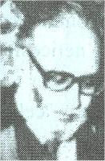

Abdüsselam
Nobel ödülü olan ilk Müslüman ilim adamı olan Abdüsselam ,1926 yılında Pakistan sınırları dışında kalan Jhanga’da doğdu.Pakistanlı Fizik bilgini Abdüsselam , Pencap ve Cambridge Üniversitelerinden matematik ve fizik dallarında birinci olarak mezun oldu.1951 yılında hazırladığı doktora teziyle kuantum elektrodinamiğine temel olacak bir çığır açtı.Aynı yıl Pencap Üniversitesi’ne profesör oldu.1954 yılında Cambridge Üniversitesi’ne okutman tayin edilince , Pencap Üniversitesi’nden ayrıldı.1957 yılında Londra Üniversitesi’ndeki İmperal College’e teorik fizik profesörü olarak tayin edildi. Bundan sonra , Abdüsselam , dünya çapında pek çok akademi, çeşitli komisyon, ilmi dernek ve ilmi heyet üyeliklerinde bulundu.Aynı zamanda pek çok ilmi kuruluşun başkanlığına getirildi.1970-1973 arasında Birleşmiş Milletler Üniversitesi’nin Birleşmiş Milletler kurucu kurulu ve vakıf üyesi oldu.1971-1972 ‘de Birleşmiş Milletler İlim ve Teknoloji Komitesi’ne başkanlık etti.1972-1978 arasında Milletlerarası Sırfi ve Tatbiki Fizik Birliği’nin ikinci başkanlığını yaptı.1976’ da Guthire Madalyası Armağanı , 1978’ de Accedamia Nazionaledi XL’ nin Malteuecci Madalyası, 1978’ de Amerikan Fizik Enstitüsü’nün John Terranca Tate Madalyası , gene 1978’ de İngiliz Kraliyet Akademisi’nin Kraliyet nişanını aldı.1979’da ABD Milli Eğitim Akademisi ve İtalyan Milli Lincei Akademisi’ne yabancı üye seçildi.Aynı yıl Nobel Fizik Armağanı verildi.Ayrıca , biri 9 Eylül 1981’de İstanbul Üniversitesi tarafından olmak üzere , dünyanın çeşitli üniversitelerinden 15’ i aşkın fahri fen doktorluğu payesi aldı.
Bugün bir taraftan Londra Üniversitesi İmperial College ‘de teorik fizik profesörlüğünü (1957’den beri) sürdürürken , diğer taraftan da Trieste’deki Milletlerarası Fizik Merkezi’nin direktörlüğünü sürdürmektedir.
Hayatının bütün devreleri milletler arası başarılarla dolu olan Prof. Abdüsselam , ender yetişen İslam alimlerinden birisidir.
Prof. Abdüsselam , 230’dan fazla orijinal çalışma yaptı.Bunlarda bir kısmını , aralarında birçok Türk fizikçilerinin de bulunduğu mesai arkadaşları ve öğrencileri ile hazırladı. Prof.Abdüsselam , bu çalışmalarında, İslamiyet’in ilme verdiği önemi bilen ve bütün ilimlerin kaynağı olduğuna inanan ve keşiflerini ona dayandıran bir Müslüman'dır.
Abdüsselam'ın Eserleri
1-Gravitasyon etkileşimleri,
2-Elektromagnetik etkileşmeler(nötronların beta bozunumlarında olduğu gibi),
3-Zayıf etkileşmeler(bunlar atom çekirdeklerinin yapı taşlarını bir arada tutmaktadır).